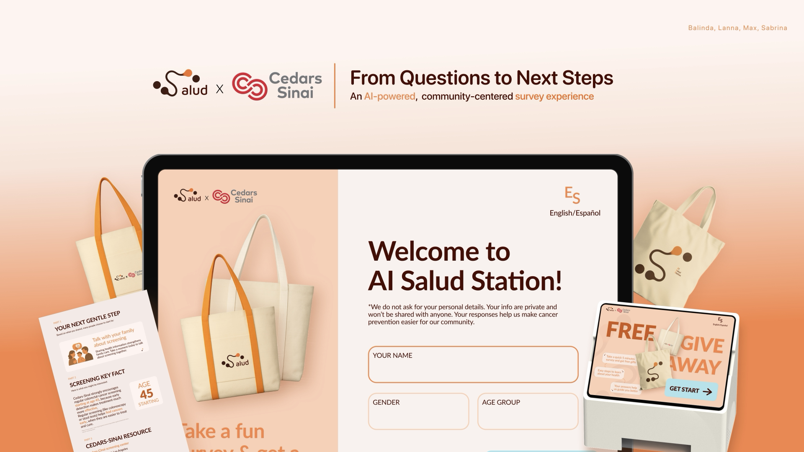
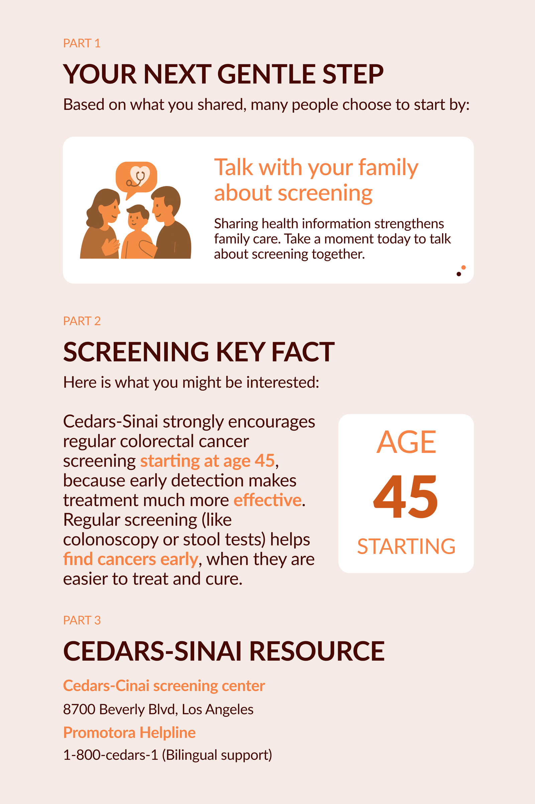
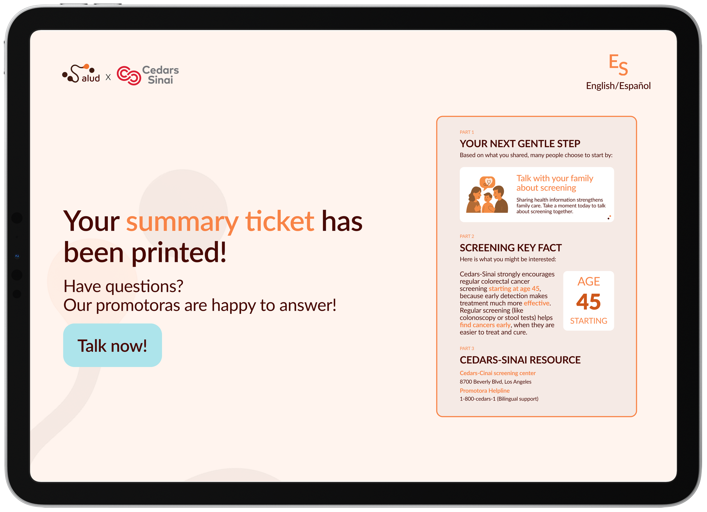

Salud × Cedars-Sinai
From Risk Assessment to Trusted Next Steps
Salud is an AI-supported cancer screening navigation and community outreach experience designed with Cedars-Sinai for Latinx communities in Antelope Valley. Situated in a grocery-store setting, the service uses a guided kiosk survey, personalized takeaways, and on-site promotoras to turn screening questions into approachable next steps.

Access was not the only barrier. Trust mattered too.
Our project focused on Latinx adults in Antelope Valley, one of the communities already reached through Cedars-Sinai’s outreach work. Cost concerns, distrust of healthcare systems, and the belief that screening is unnecessary without symptoms can make colorectal cancer screening feel distant. Through secondary research and conversations with promotoras, Cedars-Sinai’s community health workers, we learned how they bridge this gap through shared language, cultural understanding, and trusted relationships.
Risk prediction created the wrong relationship.
Our early concepts used grocery purchases or self-reported dietary habits to estimate colorectal cancer risk. Voluntary input gave users more control over what they shared, but it did not resolve the larger issue. In a public setting, personalized risk scoring could expose sensitive information, create a sense of judgment, and position AI as a medical authority. The problem was not only how the data was collected. It was the assumption that this system should draw cancer-risk conclusions about a person at all.
Bringing screening support into everyday life
We designed Salud as a promotora-supported service concept for a Ralphs grocery store, a familiar place residents may already visit each week. Rather than requiring people to enter the healthcare system to seek information, the service created a low-pressure starting point within a daily routine. The kiosk extended the reach of Cedars-Sinai’s outreach work, while an on-site promotora remained available for questions and personal guidance.

Survey screens — Questions 1–10
Per-question feedback screen

Printed summary ticket

Promotora CTA screen
Designing for support, not assessment
This project challenged my assumption that a more capable AI would automatically create a stronger product. In sensitive contexts, more capability can create distance rather than value when a system takes on more authority than people can reasonably trust it to hold. Designing responsible AI is not only about expanding what it can do. It is also about deciding what it should not do.